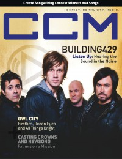

CCM Digital, Jun 2011
| Cover |
|---|
|  |
 Online Exclusively Online Exclusively |
| Writers in this Issue |
| Argyrakis, Andy Aspinwall, Grace S. Conner, Matt Crosse, Clay Greer, Andrew Hoernschemeyer, Emily Jackson, Tom Lusk, Caroline Shaver, Rachel Shust, Aaron Siler, Steve Webb, Derek |
Building 429
Cover Feature:- "Listen Up: Hearing Sound in the Noise" by Andy Argyrakis
- "Bright Eyes" by Caroline Lusk
- "Create: The Songwriter Search 2011" by Caroline Lusk
Worship:
- "Walking the Road" by Emily Hoernschemeyer
- "Music for the Radio"
- Over the Rhine by Andrew Greer
- Jennifer Holliday, Raphael G. Warnock
- Arthur Alligood by Matt Conner
- Brandon Bee by Andy Argyrakis
- Ryan Stevenson by Andy Argyrakis
- Kathy Troccoli by Andy Argyrakis
- "I Got Your Whole Brain Right Here..." by Steve Siler
- Downhere by Andrew Greer
- Tim Hughes - Love Shine Through by Matt Conner
- Stuart Townend - The Journey by Andrew Greer
- Dave & Jess Ray - Music for the Radio by Andrew Greer
- Tricia Brock - The Road by Matt Conner
- NewSong - One True God by Grace S. Aspinwall
- Peter Furler - On Fire by Matt Conner
- Nathan Tasker - Home by Andrew Greer
- Blindside - With Shivering Hearts We Wait by Andy Argyrakis
- Owl City - All Things Bright and Beautiful by Andy Argyrakis
- Matt Wertz - Weights & Wings by Grace S. Aspinwall
- Tidewater - The Seas We Sail by Matt Conner
- Dakota Green - Love is Taking Over by Grace S. Aspinwall
- Shonlock - Neveroddoreven by Andy Argyrakis
- Twinkie Clark - With Humility by Andrew Greer
- Playdough - Hot Doggin' by Matt Conner
- Emmylou Harris - Hard Bargain by Andrew Greer
- Augustana - Augustana by Andy Argyrakis
- Sean Spicer - Olive Tree by Andy Argyrakis
- "Still Something Big Tour, Chicago Theatre, Chicago, IL" by Andy Argyrakis
- "Your Kingdom Come" by Derek Webb, Rachel Shaver
- "Texting With Clay and Renee Cross" by Clay Crosse, Renee Cross
- "Fatherhood" by Caroline Lusk
- "3 Reasons Your Audience Goes to Your Show" by Tom Jackson
© 2011 CMnexus. Last updated December 2020. Contact: editor -AT- cmnexus -DØT- org About